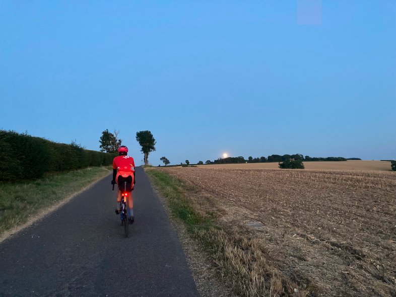
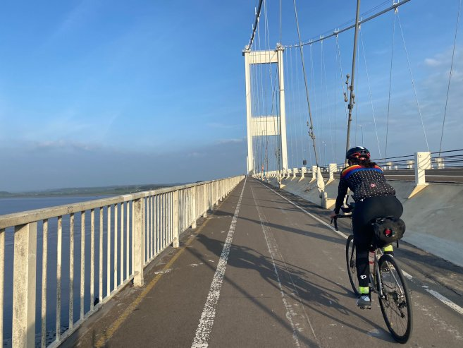
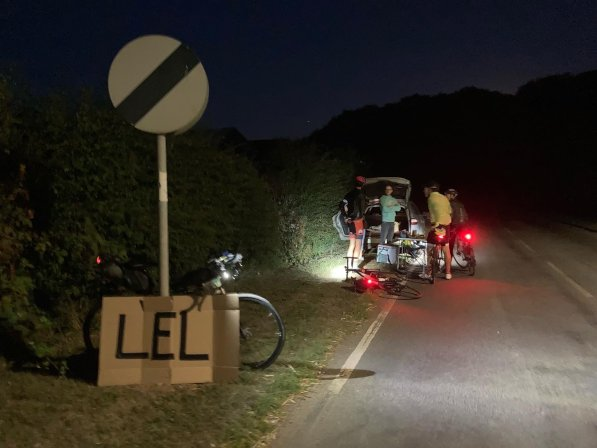

Audax

What’s audax?
Audax (also known as a Randonnée) is a non-competitive bike ride that has to be completed within a time limit. It’s not a race, or sportive, or touring – it’s totally unique.
Riding an Audax is a unique experience which attracts a diverse and mutually supportive crowd. The atmosphere typically feels quite different from sportives, with an emphasis on finishing the ride within the time - the clock keeps running when you stop!

Distances range from 50 km to more than 1000 km and during this time the clock doesn’t stop. Riders usually have to maintain a minimum speed of 15km/h and a maximum speed of 30km/h.
The oldest and most famous of these is the 1200km Paris-Brest-Paris, which runs every four years. PBP dates back to 1891 and in its early years was promoted by Henri Desgranges, perhaps more famous for his role in establishing the Tour De France. To qualify, riders have to complete a “Super-Randonneur” series of 200, 300, 400 and 600km rides in the months before the start. A number of CCC riders have participated over the years.
Another long ride is the 1500km London-Edinburgh-London (LEL). One of our members recently rode this - read her ride blog here.

Go to the Audax UK website for further information and details of upcoming events.
Several of our members are keen audaxers and will be happy to share their experiences.
Get in touch with our audax secretary Susanne if you want to find out more.